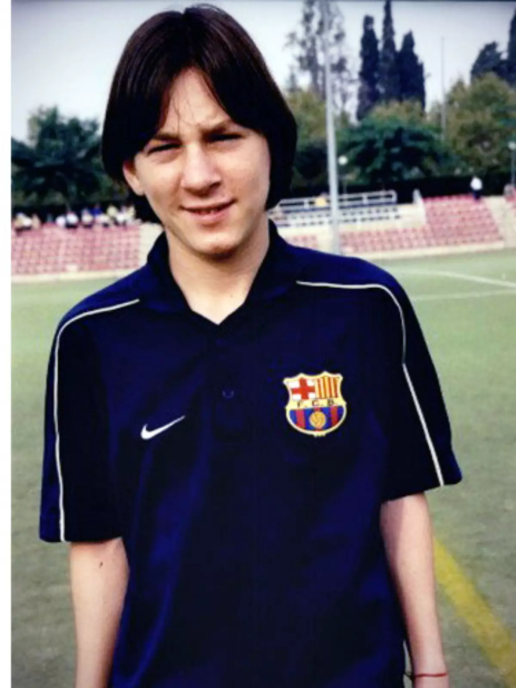
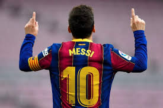
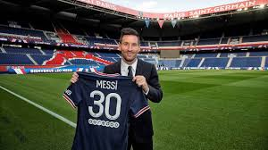

Messi nasceu em 24 de junho de 1987, em Rosário, Argentina. Desde cedo, mostrou um talento impressionante para o futebol...
Aos 13 anos, Messi mudou-se para a Espanha para ingressar na famosa academia de jovens do FC Barcelona...
No Barcelona, Messi se tornou o maior artilheiro da história do clube, conquistando inúmeros títulos...
Em 2021, Messi se transferiu para o Paris Saint-Germain (PSG), iniciando um novo capítulo em sua carreira...
Messi liderou a Argentina à vitória na Copa América de 2021 e na Copa do Mundo de 2022, consolidando seu legado como um dos maiores de todos os tempos...